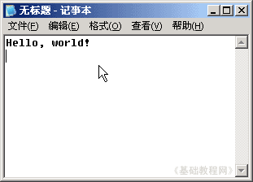
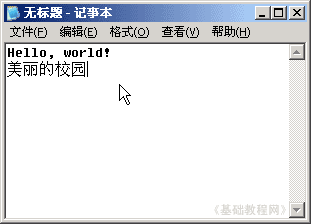
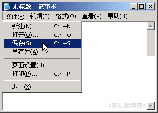
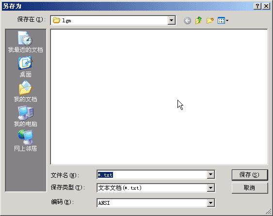
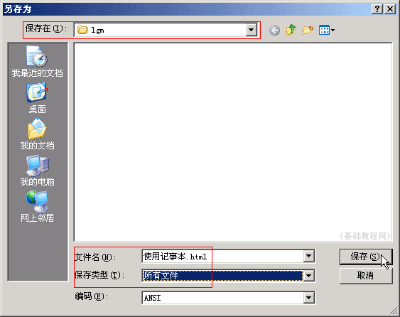
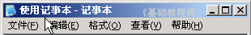
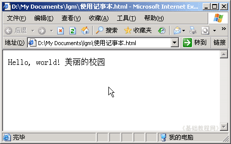

HTML 基础入门教程
使用记事本 返回
记事本是一个小巧的文本编辑器，可以用它来完成代码的输入，保存成网页以后用浏览器来查看，下面我们来看一个练习；
1、启动记事本
1）点击“开始－所有程序－附件－记事本”；
2）记事本的窗口主要包括标题栏、菜单栏、工作区，左上角有一个一闪一闪的光标插入点竖线；

2、使用记事本
1）记事本一般输入文本，试着输入“Hello, world!”，然后按一下回车键，注意空格和大小写；

2）切换到中文输入法，输入“美丽的校园”，建议使用紫光输入法，中英文切换比较方便；

3）点菜单“文件－保存”命令，出来一个另存为对话框；
 
4）保存的时候按照从上到下的顺序，
在上面找到自己的文件夹，在下面的文件名中输入“使用记事本.html”，保存类型选择“所有文件”，然后点“保存”按钮，
注意文件名从点开始都是英文的“.html”；

5）保存成功以后，在标题栏中出现文件的名称，在自己的文件夹中有了一个网页文件“使用记事本”；

6）双击打开这个文件后，会显示一个网页；

本节学习了记事本的启动和使用方法，如果你成功地完成了练习，请继续学习下一课内容；
本教程由86团学校TeliuTe制作|著作权所有
基础教程网：http://teliute.org/
美丽的校园……
转载和引用本站内容，请保留作者和本站链接。